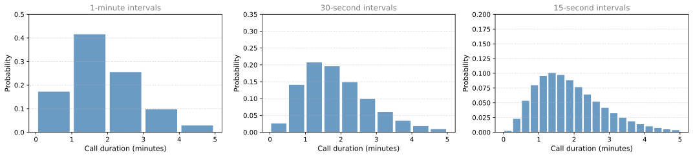
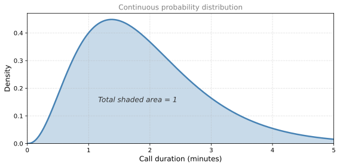
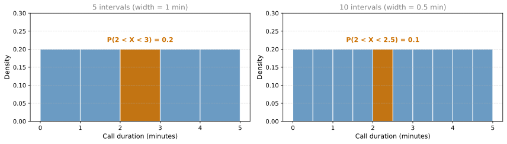
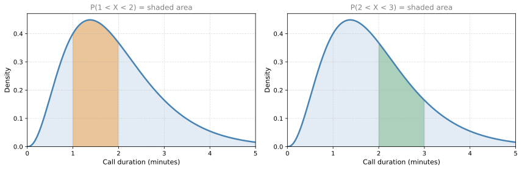
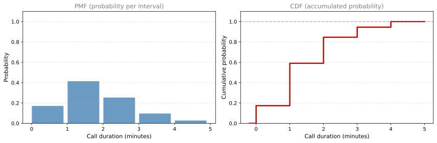
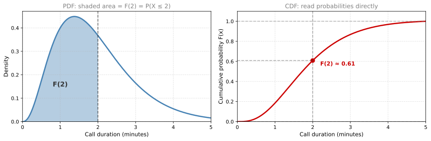
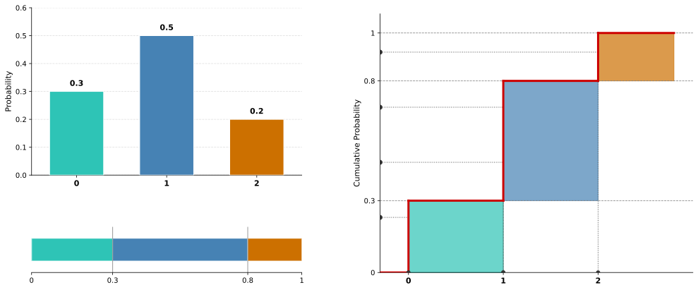
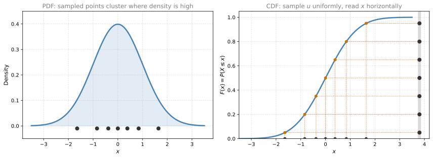

Probability Distributions (Continuous)
probability
Now that you know about discrete distributions, let us talk about continuous ones. The key difference:
Discrete vs. Continuous
Now that you know about discrete distributions, let us talk about continuous ones. The key difference:
- In discrete distributions, the possible values form a list. For example, if you toss a coin 3 times, you could get heads 0, 1, 2, or 3 times. You can always write them out: 0, 1, 2, 3.
- In continuous distributions, the possible values form an interval. For example, the amount of time you wait on the phone could be 1 minute, 1.01 minutes, 1.2237 minutes, \(\pi\) minutes. These values cannot be listed because between any two of them there are infinitely more.
Why Individual Probabilities are Zero
Imagine you are on a call with tech support. How long will you wait? The call could take 1 minute, 2 minutes, 3 minutes, or any value in between.
At first, you might try to assign probabilities the same way we did for discrete distributions: give each possible value a bar height. But there are infinitely many values the call could take. If each one had a positive probability, the sum would exceed 1 (since there are uncountably many values). So the individual bars would have to get smaller and smaller until they become zero.
This leads to a surprising fact:
NoteKey Insight
For a continuous random variable, the probability that it takes any exact value is zero. \(P(X = 1.000\ldots) = 0\). There are simply too many possible values (an entire interval) for any single one to have positive probability.
So how do we describe probabilities for continuous random variables?
Thinking in Windows (Intervals)
Instead of asking “what is the probability the call takes exactly 1 minute?”, we ask “what is the probability the call takes between 1 and 2 minutes?”
Let us build this up step by step.
Step 1: Wide intervals (1 minute each)
Suppose the call never takes more than 5 minutes. We split the range into 1-minute intervals and assign a probability to each:
Notice that most calls take between 0 and 2 minutes, and very few go all the way to 5 minutes.
Step 2: Make the intervals smaller
If we want more detail, we can use 30-second intervals (middle plot) or 15-second intervals (right plot). Each time we split further, we get more bars but each bar is shorter (since the same total probability of 1 is spread across more intervals).
Step 3: Take it to the limit
If we keep splitting infinitely, the bars become infinitely thin and infinitely many. What we get is a smooth curve. This is the continuous probability distribution.

From Sums to Areas
In a discrete distribution, the probabilities (bar heights) must sum to 1.
In a continuous distribution, we have the same requirement but expressed differently: the area under the curve must equal 1. The curve itself does not give you a probability directly. Instead, the probability that the random variable falls within an interval is the area under the curve over that interval.
| Discrete | Continuous | |
|---|---|---|
| Possible values | List (0, 1, 2, …) | Interval (all reals in a range) |
| Probability of exact value | Can be positive | Always zero |
| Total must equal 1 | Sum of bar heights | Area under the curve |
| Probability of a range | Sum of individual probabilities | Area under the curve in that range |
Review Questions
1. Why is \(P(X = 2.5) = 0\) for a continuous random variable?
TipAnswer
Because a continuous random variable can take uncountably many values (an entire interval). If any single value had a positive probability, the total would exceed 1. So the probability of any exact value must be zero. Instead, we compute probabilities over intervals (ranges of values).
1. In a continuous distribution, what must equal 1?
TipAnswer
The total area under the curve must equal 1. This is the continuous equivalent of requiring that all bar heights sum to 1 in a discrete distribution.
1. How do you find the probability that a continuous random variable falls between 2 and 3 minutes?
TipAnswer
You compute the area under the curve between \(x = 2\) and \(x = 3\). This area represents \(P(2 \leq X \leq 3)\).
1. What happens to the bar heights as we make the intervals smaller and smaller in our approximation?
TipAnswer
The bar heights get smaller (since the same total probability is spread over more intervals), and the number of bars increases. In the limit, the bars become a smooth curve, and we transition from a discrete approximation to the true continuous distribution.
Probability Density Function (PDF)
In discrete distributions, each value has a probability given by the probability mass function (PMF). For continuous distributions, the equivalent is called the probability density function (PDF), denoted by a lowercase \(f\) (or \(f_X\) to specify which variable).
Uniform Example: Equal Probability Everywhere
Let us start with a simple case. Suppose the call center answers with equal probability at any time between 0 and 5 minutes. If we divide this range into 5 equal parts, the probability of landing in any one part is the same.
What is the probability that the call lasts between 2 and 3 minutes? Since there are 5 equal parts and the total probability is 1, each part has probability \(\frac{1}{5} = 0.2\).

Notice something important: when we split into 10 intervals (right), the height stays the same (0.2), but the width is halved. The probability of landing in the highlighted interval is now \(0.2 \times 0.5 = 0.1\), not 0.2.
This is the key insight: probability = height × width = area. The height alone is not the probability. It is the density (probability per unit width).
Probability as Area
For the non-uniform distribution (where calls are more likely to last 1-2 minutes):

The probability of the call lasting between 1 and 2 minutes is the orange area on the left. The probability of lasting between 2 and 3 minutes is the green area on the right. You can see that the 1-2 interval has more area (higher probability) because the curve is taller there.
What about the probability of the call lasting exactly 2 minutes? That would be the area of a line segment (zero width), which is zero. This is why \(P(X = 2) = 0\) for continuous variables.
Requirements for a Valid PDF
A function \(f(x)\) is a valid probability density function if it satisfies:
Non-negativity: \(f(x) \geq 0\) for all \(x\). The curve can never go below zero (otherwise it would imply negative probability).
Total area equals 1: \(\displaystyle\int_{-\infty}^{\infty} f(x) \, dx = 1\). The total area under the curve across all possible values must be 1.
Note that \(f(x)\) can be zero for many values (for example, negative call durations are impossible, so \(f(x) = 0\) for \(x < 0\)). It can also be greater than 1 at some points, as long as the total area remains 1. The density is not a probability itself; only areas are.
PMF vs. PDF Summary
| Discrete (PMF) | Continuous (PDF) | |
|---|---|---|
| Notation | \(p(x)\) or \(p_X(x)\) | \(f(x)\) or \(f_X(x)\) |
| Gives you | \(P(X = x)\) directly | Density (probability per unit width) |
| Probability of a value | \(p(x)\) | \(P(X = x) = 0 \;\; \forall x\) |
| Probability of a range \([a, b]\) | \(\sum_{x=a}^{b} p(x)\) | \(\int_a^b f(x) \, dx\) (area) |
| Must be \(\geq 0\) | Yes | Yes |
| Must sum/integrate to 1 | \(\sum p(x) = 1\) | \(\int f(x) \, dx = 1\) |
The symbol \(\forall\) means “for all.” So the continuous column reads: “the probability that \(X\) equals any specific value \(x\) is always 0.”
Review Questions
1. In the uniform example (equal probability between 0 and 5 minutes), what is the height of the PDF?
TipAnswer
The height is \(\frac{1}{5} = 0.2\). The total area must be 1, and the base is 5, so height \(= \frac{1}{\text{base}} = \frac{1}{5}\).
1. Can a PDF value be greater than 1? Why or why not?
TipAnswer
Yes. The PDF gives density (probability per unit width), not probability itself. As long as the total area under the curve equals 1, individual heights can exceed 1. For example, a uniform distribution between 0 and 0.5 would have height 2, but the area is \(2 \times 0.5 = 1\).
1. What are the two requirements for a valid PDF?
TipAnswer
- \(f(x) \geq 0\) for all \(x\) (non-negativity).
- \(\int_{-\infty}^{\infty} f(x) \, dx = 1\) (total area under the curve equals 1).
1. In the non-uniform call center example, why is \(P(1 < X < 2)\) greater than \(P(3 < X < 4)\)?
TipAnswer
Because the PDF curve is taller between 1 and 2 minutes than between 3 and 4 minutes. Since probability equals area under the curve, a taller curve over the same width means more area, which means higher probability.
Cumulative Distribution Function (CDF)
So far, to find probabilities with the PDF you need to calculate areas under a curve. That is not always convenient. The cumulative distribution function (CDF) gives you a shortcut: it directly tells you the probability that the variable is less than or equal to some value.
Unlike the PMF (discrete only) and PDF (continuous only), the CDF works for both discrete and continuous variables. The “D” stands for “distribution,” not “density.” It is a universal tool.
\[ F(x) = P(X \leq x) \]
The CDF is denoted with a capital \(F\) (or \(F_X\) to specify the variable). Do not confuse it with lowercase \(f\), which is the PDF.
Building the CDF from Discrete Bars
Let us return to the call center with the discrete approximation (1-minute intervals). On the left we have the PMF (probability per interval). On the right we build the CDF by accumulating (adding up) probabilities from left to right:
- \(F(1)\) = probability the call is between 0 and 1 minute = first bar
- \(F(2)\) = probability the call is between 0 and 2 minutes = first bar + second bar
- \(F(3)\) = first + second + third bar
- …and so on until \(F(5) = 1\) (all bars added)

Notice two things about the CDF:
- It starts at 0 (no probability has been accumulated yet).
- It ends at 1 (all probability has been accumulated).
Continuous CDF
For the continuous distribution, the idea is the same. Instead of summing bar heights, you accumulate area under the PDF curve from left to right. At any point \(x\), the CDF value \(F(x)\) equals the total area under the PDF from the beginning up to \(x\).

On the left, the shaded area under the PDF up to \(x = 2\) is the probability \(P(X \leq 2)\). On the right, you simply read that value off the CDF curve at \(x = 2\). No area calculation needed.
Properties of the CDF
Every CDF must satisfy these properties:
- Starts at 0: \(F(-\infty) = 0\) (or \(F\) at the leftmost possible value is 0).
- Ends at 1: \(F(\infty) = 1\) (or \(F\) at the rightmost possible value is 1).
- Never decreases: Since you are accumulating probability, and probability cannot be negative, the CDF can only go up or stay flat. It never goes down.
- Values between 0 and 1: Since it represents a probability, \(0 \leq F(x) \leq 1\) for all \(x\).
Discrete vs. Continuous CDF
For a discrete variable, the CDF has jumps (staircase shape). Each jump corresponds to a value that has positive probability. The height of the jump equals the probability of that value.
For a continuous variable, the CDF is a smooth curve. There are no jumps because no single point has probability mass on its own.
PDF and CDF Give the Same Information
The PDF and CDF contain the same information, just written differently:
- With the PDF, you calculate areas to find probabilities.
- With the CDF, you read heights directly.
You can always go from one to the other. The CDF is the accumulated area of the PDF, and the PDF is the rate of change (slope) of the CDF.
Review Questions
1. What does \(F(3) = 0.85\) mean in plain language?
TipAnswer
It means there is an 85% probability that the call lasts 3 minutes or less. In other words, \(P(X \leq 3) = 0.85\).
1. How can you compute \(P(2 < X < 4)\) using the CDF?
TipAnswer
\(P(2 < X < 4) = F(4) - F(2)\). The CDF at 4 gives the total probability up to 4, and subtracting the CDF at 2 removes the probability below 2, leaving just the probability between 2 and 4.
1. Why does the CDF of a discrete variable have jumps, but the CDF of a continuous variable is smooth?
TipAnswer
In a discrete variable, specific values have positive probability (mass), which causes sudden jumps in accumulated probability. In a continuous variable, no single point has mass (\(P(X = x) = 0\)), so probability accumulates gradually without any sudden jumps.
1. What are the four properties every CDF must satisfy?
TipAnswer
- Starts at 0 (left limit is 0).
- Ends at 1 (right limit is 1).
- Never decreases (non-decreasing).
- All values are between 0 and 1.
Sampling from a Distribution Using the CDF
Imagine you have a dataset (for example, heights of people), but you need more data and collecting it is too expensive. What can you do? You can create synthetic data that looks like the original. The way to do this is to construct a distribution from your data and then sample from it — meaning you pick points that follow the probabilities given by that distribution.
This is a fundamental concept in probability and machine learning: sampling from a probability distribution.
Discrete Case
Suppose you have a simple discrete distribution with three outcomes: green, blue, and orange, with probabilities 0.3, 0.5, and 0.2 respectively.

To sample from this distribution, notice that the probabilities add to 1. You can stack them into a continuous strip between 0 and 1 (bottom-left above). Then follow three steps:
Step 1: Generate a random number \(u\) uniformly between 0 and 1.
Step 2: Find which interval the number belongs to:
- \([0, 0.3)\) → Green (outcome 0)
- \([0.3, 0.8)\) → Blue (outcome 1)
- \([0.8, 1.0]\) → Orange (outcome 2)
Step 3: Assign the outcome based on the interval.
The right side of the figure shows an equivalent view using the CDF staircase. We simply rotated the bars from the left and pushed them to the right. The red line is the cumulative distribution function. Now all you have to do is sample uniformly from the vertical interval \([0, 1]\) (the black dots on the left edge). Then you read out what the value is on the horizontal axis by following the CDF — and you are picking numbers according to the distribution on the left.
For example, if your uniform sample is \(u = 0.55\), it sits between 0.3 and 0.8 on the CDF. Following the staircase horizontally, you land at \(x = 1\) (Blue). The bigger the step, the more likely you are to land there.
Continuous Case
The same idea works for continuous distributions. Suppose you want to sample from a normal distribution. Calculating areas directly is hard, but the CDF gives you a shortcut.
The method is called inverse transform sampling and follows three steps:
Step 1: Sample \(u\) uniformly from \([0, 1]\).
Step 2: Find the value \(x\) such that \(F(x) = u\) (i.e., invert the CDF).
Step 3: The resulting \(x\) follows the desired distribution.
Why does this work? Points sampled uniformly on the vertical axis of the CDF get mapped to the horizontal axis. Where the CDF is steep (high density region), many uniform samples get mapped to a narrow range of \(x\) values, producing more points there. Where the CDF is flat (low density region), fewer samples land.

On the left, you can see that sampled points cluster where the PDF is tallest (near the mean). On the right, uniform samples on the vertical axis are mapped through the CDF to produce values that follow the normal distribution.
Summary
The CDF is not just a way to read probabilities — it is a practical tool for generating random samples from any distribution. This inverse transform method works for both discrete and continuous distributions and is widely used in simulations and machine learning.
Review Questions
1. In the discrete sampling method, why do you generate a uniform random number between 0 and 1?
TipAnswer
Because the probabilities of all outcomes sum to 1, they partition the interval \([0, 1]\) into segments. A uniform random number lands in each segment with probability equal to the segment’s length, which matches the desired probability of each outcome.
1. Why does inverse transform sampling produce more samples where the PDF is high?
TipAnswer
Where the PDF is high, the CDF is steep (rising quickly). A steep CDF means many different uniform values \(u\) all map to a narrow range of \(x\) values. So more samples end up concentrated there, exactly matching the high density.
1. Can you use inverse transform sampling if you only know the CDF numerically (not as a formula)?
TipAnswer
Yes. You can interpolate the CDF numerically. Given a uniform sample \(u\), you find the \(x\) where the CDF crosses \(u\) using interpolation or binary search. This is commonly done in practice for distributions without closed-form inverse CDFs.